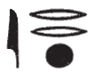

Esna II, 48
- Location: Facade, Upper Bandeau, lower row
- Date: Unknown, probably Vespasian
- Hieroglyphic Text
- Bibliography: Sauneron (2012), p. 74 (48 A, partial translation); Sauneron (1961), p. 233 (48 A, partial translation)
48 A: Bandeau South (left)
ms m dwȝw
ẖnm=f jt=f Tȝ-ṯnn
ʿḫ[.n]=f p.t [ẖ]r=f
n ȝbd 3 pr.t sw 1
Re is seen within as an august child,
who is born in the morning.
He unites with his father, Tatenen,
after he (Tatenen) lifted up the sky [bear]ing him,
on III Peret (Phamenoth) 1.1
ʿnḫ(.w) n mȝwy=f
wpš nn.t
šnbtj nb hȝy.ty
ḫprj pw rʿ-nb
Harakhty, who illumines the two lands,
from whose rays (one) lives,
who brightens the sky,
falcon, lord of the double firmament,
this one is Khepri, every day.
m pr=f
bẖ.n=f ḥw.t-ṯȝ.wy
m wbn=f
jrr sḫ.t m nqr
As he illumined the Temple of the Father
by his coming forth,
so did he brighten the Temple of the Two Children
by his rising,
so that the field is overlaid5 with gold dust.
wṯz.n=f p.t m hȝy.t n bȝ=f
wḏ.n=f dwȝ.t r ḥȝp ḏ.t=f
He is moreover called “Amun” by name:6
as he raised up the sky as a chapel for his Ba,
so did he ordain the Duat to conceal his body.
ẖnm-Rʿ nb-tȝ-sn.t
nṯr-ʿȝ nb sḫ.t
This august god,
Khnum-Re Lord of Esna,
Great god, Lord of the Field.
Notes
The festival of “lifting up heaven” on Phamenoth 1 is widely attested since the New Kingdom, and most frequently involves the Memphite demiurge Ptah-Tatenen; cf. Berlandini (1995), pp. 29-31. At Esna, this coincided with the major festival of installing the potter’s wheel by Khnum-Re-Tatenen: Sauneron (2012), pp. 71-88, 81-244; Leitz and Löffler (2019).↩
The text still seems to describe the union between the solar god (pw = Khepri), and his father, the demiurge and procreator (pfy = Tatenen). Nonetheless, Khnum is elsewhere called explicitly wsn pfy: [Esna II, 17], 6-7; [Esna III, 249], 2; similarly [Esna II, 184], 12; cf. Pichel (2018) pp. 22-23, n. i.↩
Reference to the quadrifrontic ram of Mendes, composed of Re, Shu, Geb, and Osiris. They are explicitly labelled elsewhere in [Esna II, 17], 46-49; [Esna III, 250], 16-17; [Esna III, 232], 6; separate depictions of them in [Esna II 140]. Cf. Pichel (2018), pp. 76-79. The Mendesian ram frequently receives these same virile epithets, as well as Khnum at Esna.↩
For Khnum “foremost of Neb-ankh”, see also [Esna II, 52], 26.↩
Not listed in dictionaries (), Sauneron (1961), p. 233, compared this to Coptic ⲉⲓⲉⲗⲉⲗ, “to shine” (Crum, CD 77 ). However, this seems to be the same hieroglyphic word rr which occurs in divine epithets such as rr m nbw, “overlaid with gold”. It might be related to Demotic lʿlʿ, Coptic ⲗⲁⲗⲉ: Klotz (2015), pp. 91-93, n. m.↩
Yet another reference to constructing a firmament (hȝy.t), this section appears to refer again to Tatenen, one aspect of Khnum-Re. The god Amun-Re is frequently praised for establishing all regions of the cosmos (cf. Deir Chelouit III, 125, 8-9).↩